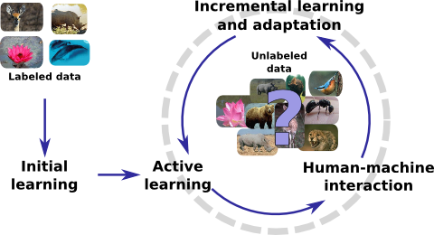

This area tries to bridge the gap between human and computer vision by developing algorithms that learn from data continuously and with minimal supervision. Together with several colleagues and students, I am developing active learning, novelty detection, adaptation, and discovery algorithms in this branch of research.

- Novelty detection: How can we efficiently detect novel categories?
- Active learning: In which cases is it most valuable to ask for human annotation?
- Adaptation: What kind of adaptation is required over time?
- Discovery: How can we continuously discover semantic concepts in unlabeled or weakly-labeled data?